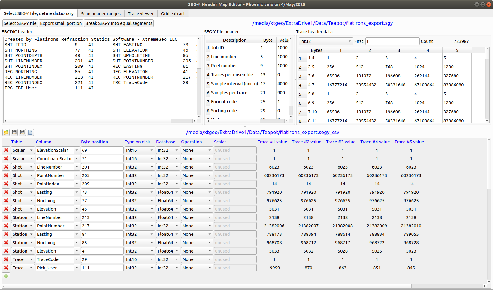

Phoenix is designed to handle the largest surveys. It is possible to import thousands of SEGY files and distribute the imported data over any number of servers. The sophisticated distributed project logic in Phoenix hides the complexity from the user.
Shots and stations are uniquely identified by three numbers - LineNumber, PointNumber, and PointIndex. This follows the SPS standard, which can be found at seg.org standards web page.
The following information must be available if the SEGY trace headers:
| Table | Column | Required? |
|---|---|---|
| Shot | LineNumber | Optional, strongly recommended for 3D surveys |
| Shot | PointNumber | Yes |
| Shot | PointIndex | Optional replant code - suggest using FFID for this field |
| Shot | Easting | Yes |
| Shot | Northing | Yes |
| Shot | Elevation | Yes |
| Shot | Depth | Optional - required for dynamite data |
| Shot | Uphole | Optional - required for dynamite data |
| Shot | WaterDepth | Optional - required for marine/OBC data |
| Station | LineNumber | Optional, strongly recommended for 3D surveys |
| Station | PointNumber | Yes |
| Station | PointIndex | Optional replant code |
| Station | Easting | Yes |
| Station | Northing | Yes |
| Station | Elevation | Yes |
| Station | Depth | Optional- required for OBC |
| Station | WaterDepth | Optional - required for marine/OBC data |
| Trace | Pick_User | Optional |
Additional user data may be imported into the shot and station databases, for example statics computed with another program, or first break picks
Navigate to the main Phoenix application and click on the “Open SEGY viewer / editor” button:
Open the SEGY file by clicking “Select SEG-Y file”, then create a new dictionary file by clicking on the “new” icon in the lower pane:
Add the required and optional header definitions. A sample completed dictionary is shown below.

The “Scan header ranges” tab can be very helpful when trying to determine the location of information in the headers:

It may be a good idea to view the seismic also. Header information can be displayed above the trace data helping to confirm the correctness of the header dictionary.
Navigate back to the main Phoenix application window and right-click on the top-level “Datasets” icon in the project tree. Select “New dataset - import SEGY files”
Select the header dictionary file, and any number of SEGY files. The same header dictionary will be applied to all files
| Option | Description |
|---|---|
| Dataset name | |
| Bin size | Used for internal smoothing operations |
| Dataset count per PhoenixData directory | The data in the SEGY files is divided up into a number of datasets. |
| Dataset maximum time | Imported data will be clipped to this time |
| Dataset sample interval | Imported data will be converted to this sample interval |
The following shows that we are creating four datasets on two different disks, for a total of eight datasets
We generally recommend against selecting this option.
You have the option of creating a Merge after the seismic import is finished.
When the import job is finished you will need to click the reload button to refresh the tree: